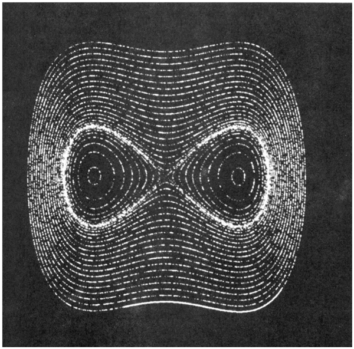
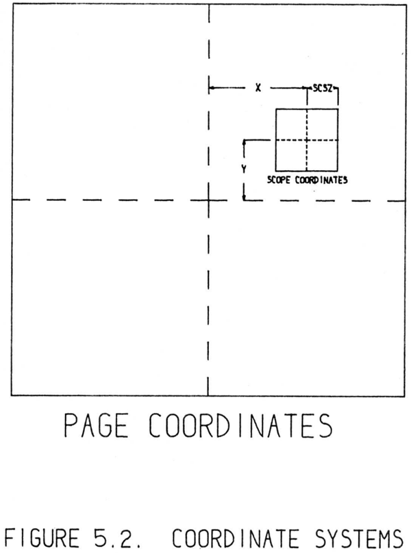
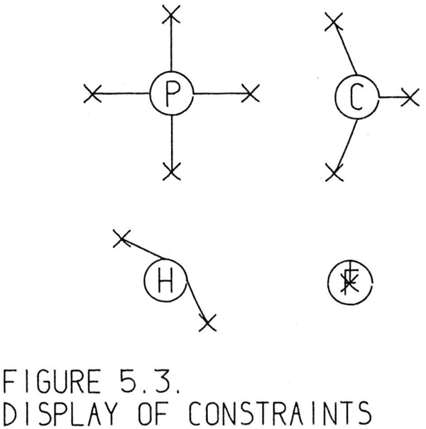
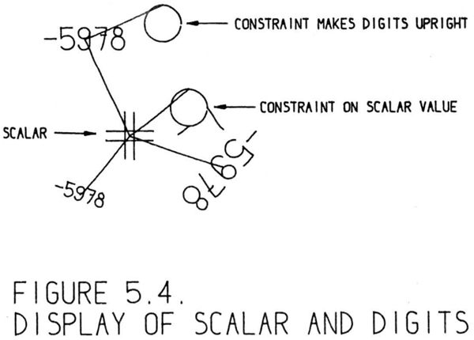

The display system, or “scope,” on the TX-2 is a ten bit per axis electrostatic
deflection system able to display spots at a maximum rate of about 100,000 per
second. A display instruction permits a single spot to be shown on the display
at any one of slightly more than a million places, requiring 20 bits of information to specify the position of the spot. Due to the multiple sequence design
of the TX-2 it is convenient to permit the display system to operate at its own
speed. The display will request memory cycles whenever they are required
to transmit more information to it, but the time actually taken in displaying a
spot will not be lost, for the rest of the TX-2 may be involved with other operations meanwhile. It has been found useful, therefore, to store the locations
of all the spots of a drawing in a large table in memory and to produce the
drawing by displaying from this table. The display system, then, sees the rest
of Sketchpad as 32,000 words of core storage. The rest of the Sketchpad is able
to compute and store spot coordinates in the display table without regard to
the timing of the display system.
TX-2の表示システム（「スコープ」）は、各軸10ビットの静電偏向方式を採用しており、最大で毎秒約10万個の点を表示する能力を持っています。表示命令により、100万カ所余りの任意の場所に点を一つ表示することが可能であり、その位置を指定するには20ビットの情報が必要です。TX-2はマルチシーケンス設計となっているため、表示システムを独自の速度で動作させるのが好都合です。表示システムは、さらなる情報を転送する必要が生じるたびにメモリサイクルを要求しますが、点の表示に要する時間中もTX-2の他の部分は別の処理を行えるため、その時間が無駄になることはありません。したがって、図形を構成するすべての点の位置をメモリ上の大きなテーブルに格納し、そのテーブルに基づいて表示を行うことで図形を描画する手法が有効であることが判明しました。つまり、表示システムから見れば、Sketchpadの他の部分は32,000ワードのコアメモリとして認識されることになります。Sketchpadの他の部分は、表示システムの動作タイミングを気にすることなく、表示用テーブル内の点の座標を計算し、格納することができます。
The display spot coordinates are stored one to a memory word. The display
subprogram displays each in turn, taking 20 microseconds each so that some
time will be left over for computation. If instead of displaying each spot successively, the display program displays every eighth in a system of interlace,
the flicker of the display is reduced greatly, but lines appear to be composed of
crawling dots. For large displays made up mostly of lines such an interlace is
useful. However, fork repetitive patterns of short lines, the effect may be that
the entire drawing seems to dance because of synchronization between the interlace and the repetitive nature of the pattern. The interlace may be turned on
or off under user control by means of a toggle switch.
表示点の座標は、1つのメモリワードに1つずつ格納されます。表示用サブルーチンは各点を順次表示しますが、1点あたり20マイクロ秒を費やすことで、計算処理のための時間を確保しています。各点を順番に表示する代わりに、インターレース方式を用いて8点おきに表示を行うと、画面のちらつきは大幅に低減されますが、線が「這い回る点」で構成されているように見えてしまいます。線が主体となる大規模な表示においては、このようなインターレース方式が有効です。しかし、短い線が繰り返されるパターンを表示する場合、インターレースの動作とパターンの繰り返し特性が同期してしまい、図形全体が踊っているように見えることがあります。インターレース機能のオン／オフは、トグルスイッチを使ってユーザーが切り替えることができます。
Early display work with the display file led to the discovery by the author
and others that if the spots were displayed at random, a twinkling picture resulted which is pleasing to the eye and avoids flicker entirely (see Figure 5.1).
However, small detail is lost because of the eye’s inability to separate the pattern from the random twinkle unless the pattern is gross. Twinkling, like interlace, is under user control by a toggle switch. Twinkling is accomplished
by scrambling the order of the display spot locations in the display file. To
do this, each successive entry is exchanged with an entry taken at random until every entry has been exchanged at least once. Needless to say, whether a
scrambled file is displayed successively or by interlace makes no difference to
its twinkling appearance.
ディスプレイ・ファイルを用いた初期の表示実験において、著者らは、表示点をランダムに表示すると、目に心地よく、かつフリッカー（ちらつき）が全く生じない「きらめく」ような画像が得られることを発見しました（図5.1を参照）。
ただし、表示されるパターンが十分に大きなものでない限り、ランダムなきらめきとパターンを視覚的に分離することが困難なため、細かいディテールは失われてしまいます。インターレース表示と同様に、この「きらめき」効果はトグルスイッチによってユーザーが制御できるようになっています。きらめき効果は、ディスプレイ・ファイル内の表示点位置の順序を入れ替える（スクランブルする）ことで実現されます。具体的には、すべてのエントリが少なくとも一度は入れ替えられるまで、順次、各エントリをランダムに選んだ別のエントリと入れ替えていきます。言うまでもなく、スクランブルされたファイルを順次表示するかインターレース表示するかによって、きらめくような見た目に違いが生じることはありません。

Figure 5.1: TWINKLING DISPLAY. Displaying the spots of a large display in
random sequence makes the display appear to “twinkle.” This photograph
was exposed only long enough to show about half of the spots of a twinkling
display. It conveys the impression of a twinklings display as well as any still
picture can.
The curves are of the equation \(x^4 − x^2 + y^2 = a^2\) for several values of a. They
were drawn by another program rather than by Sketchpad.
図5.1：きらめく表示。多数の点をランダムな順序で表示すると、全体として「きらめいて」見えるようになります。この写真は、きらめく表示の点のおよそ半分が表示される程度の時間だけ露光して撮影されたものです。静止画として可能な限り、きらめく表示の様子をうまく捉えています。
ここに示された曲線は、\(a\) のいくつかの値に対する \(x^4 − x^2 + y^2 = a^2\) という方程式に基づいています。これらはSketchpadではなく、別のプログラムによって描画されたものです。
Of the 36 bits available to store each display spot in the display file, 20 are
required to give the coordinates of that spot for the display system, and the
remaining 16 are used to give the address of the n-component element which
is responsible for adding that spot to the display. Thus, all the spots in a line
are tagged with the ring structure address of that line, and all the spots in
an instance are tagged as belonging to that instance. The tags are used to
identify the particular part of the drawing being aimed at by the light pen for
demonstrative statements. See Chapter IV, Figure 4.5, p61.
ディスプレイ・ファイル内で各表示点を格納するために利用可能な36ビットのうち、20ビットはその点の座標をディスプレイ・システムに指定するために必要とされ、残りの16ビットは、その点を表示に追加する役割を担うn成分要素のアドレスを指定するために使用されます。したがって、ある線上のすべての点はその線のリング構造アドレスでタグ付けされ、あるインスタンス内のすべての点はそのインスタンスに属するものとしてタグ付けされます。これらのタグは、指示的な操作においてライトペンが指し示している図形の特定部分を識別するために使用されます（第4章、図4.5、61ページを参照）。
If a part of the drawing is being moved by the light pen, its display spots
will be recomputed as quickly as possible to show it in successive positions.
The display spots for such moving parts are stored at the end of the display
file so that the display of the many nonmoving parts need not be disturbed.
Moving parts are made invisible to the light pen so that the demonstrative
and pseudo pen location computations described in Chapter IV will not “lock
on” to parts moving along with the pen.
ライトペンによって図形の一部が移動される場合、その部分を連続する位置に表示するために、表示上の点が可能な限り高速に再計算されます。こうした移動する部分の表示点は、静止している多数の図形部分の表示を乱すことのないよう、表示ファイルの末尾に格納されます。また、移動する部分はライトペンに対して不可視の状態にされます。これは、第4章で述べた指示用および擬似的なペン位置の計算処理が、ペンと共に移動する図形部分に「ロックオン」してしまうのを防ぐためです。
The coordinate system of the TX-2 display system has origin at the center of the
scope and requires ten bits of deflection information located at the left of 18 bit
computer subwords for each axis. Treatment of these numbers as signed fractions of full scope deflection leads to the most natural programming because
of the fixed point, signed fraction nature of the TX-2 multiply and divide instructions. The scope coordinate system is natural to the ability of the TX-2 to
perform arithmetic operations simultaneously on two 18 bit half words. It is
not suitable for representing variables with more than two components, nor is
the precision available in 18 bits adequate for all the operations for which the
Sketchpad system is applicable.
TX-2のディスプレイ・システムの座標系は、スコープ（画面）の中心を原点としています。各軸の偏向情報は、18ビットのコンピュータ・サブワードの左側に配置される10ビットのデータで構成されます。TX-2の乗算・除算命令は固定小数点形式の符号付き小数として演算を行うため、これらの数値をスコープの最大偏向幅に対する符号付き小数として扱うのが、プログラミングを行う上で最も自然な方法となります。このスコープの座標系は、TX-2が2つの18ビット・ハーフワードに対して同時に算術演算を行えるという能力と親和性が高いものです。しかし、3つ以上の成分を持つ変数を表現するには適しておらず、また18ビットという精度は、Sketchpadシステムが適用されるすべての演算において十分なものとは言えません。
For convenience in representing many component variables and for more
than 18 bit precision, Sketchpad uses an internal coordinate system for drawing representation divorced from the representation required by the display
system. This internal system is called the “page” coordinate system. In think ing of the drawings in Sketchpad, the pagek coordinates are considered as
fixed. A page to scope transformation gives the ability to view on the scope
any portion of the page desired, at any degree of magnification, as if through
a magnifying glass. The magnification feature of the scope window-into-thepage makes it possible to draw the fine details of a drawing. The range of
magnification of 2000 available makes it possible to work, in effect, on a 7-inch
square portion of a drawing about 1/4 mile on a side.
多数の構成要素変数を扱い、かつ18ビットを超える精度を確保するため、Sketchpadは描画表現において、ディスプレイシステムが要求する表現形式とは独立した内部座標系を使用しています。この内部システムは「ページ」座標系と呼ばれます。Sketchpad上で図面を扱う際、ページ座標は固定されたものとみなされます。ページからスコープ（画面）への変換機能により、虫眼鏡越しに見るかのように、ページの任意の領域を任意の倍率でスコープ上に表示することが可能です。スコープによる「ページを覗き見る窓」としての拡大機能は、図面の微細な部分を描画することを可能にします。最大2000倍という拡大率により、実質的には一辺が約400メートル（1/4マイル）ある図面のうち、7インチ四方の領域を対象に作業を行うことができます。
The page coordinate system is intended for use only internally and will always be translated into display or plotter coordinates by the output display
subroutines. Therefore, it is impractical to assign any absolute scale factor to
the page coordinate system itself; it is meaningless to ask how big is the page.
It is, however, very important to know how big the visible representations of
Sketchpad drawings will be, for one must make drawings in the correct sizes
if one is to communicate with machine shops. Dimensions indicated on the
drawing must correspond to the dimensions of the drawing in its final form
if full-size drawings are to be produced. The computer’s only concern with
the actual size of the page coordinate system is to know what decimal number
should be displayed for the value of a certain distance in page coordinates. As
Sketchpad now stands, the value is such that one-to-one scale drawings can be
produced on the plotter if dimensions are read in units of thousandths of an
inch.
ページ座標系は内部での使用のみを意図したものであり、出力表示用サブルーチンによって常にディスプレイ座標やプロッター座標へと変換されます。したがって、ページ座標系そのものに絶対的な縮尺を割り当てることは現実的ではなく、「ページがどれくらいの大きさか」を問うこと自体に意味がありません。しかし、Sketchpadで作成した図面が実際に表示された際にどの程度の大きさになるかを知ることは極めて重要です。なぜなら、機械加工の現場とやり取りを行うには、適切なサイズで図面を作成する必要があるからです。実物大の図面を作成する場合、図面上に示された寸法は、最終的な形態における図面の寸法と一致していなければなりません。ページ座標系の実際のサイズに関してコンピュータが関与するのは、ページ座標系における特定の距離の値を表示する際、どのような数値（10進数）を用いるべきかという点だけです。現在のSketchpadの仕様では、寸法を1/1000インチ単位で読み取れば、プロッター上で1対1の縮尺（実物大）の図面を作成できるようになっています。
Page coordinates, then, are dimensionless signed fractions, 36 bits long
which are considered as fixed when considering drawing representations. In
order to avoid the troubles of overflow, it is made difficultk for the user to generate page coordinates with values in the most significant six or seven bits of
the 36 allowed. This is done by artificially limiting the maximum part of the
page displayed on the scope to 1/256 of the page’s linear dimension. The 29 or
30 bits of precision which remain are sufficient for all applications. The maximum magnification of the display is also limited so that the “grain” of the
page coordinates cannot show on the display. The 2000-to-one scale change
mentioned above remains
ページ座標は、描画表現を扱う際には固定値として扱われる、36ビット長の無次元の符号付き小数です。オーバーフローの問題を回避するため、ユーザーが36ビットのうち最上位の6～7ビットを使用するようなページ座標を生成することは困難な仕様になっています。これは、スコープ（画面）上に表示されるページの最大範囲を、ページ全体の線形寸法の1/256に人為的に制限することで実現されています。残された29～30ビットの精度は、あらゆる用途において十分なものです。また、ページ座標の「粒度（きめ）」が画面上に現れないよう、表示の最大拡大率も制限されています。前述の2000対1という縮尺変更の範囲は維持されています。
A scale factor for the display controls the size of the square which will
appear on the scope. The actual number saved is the half-length of the side
of the square, called SCSZ for SCope SiZe as shown in Figure 5.2. Also saved
are the page coordinates of the center of the scope square. By changing these
numbers the portion of the page shown on the scope may be changed in size
and moved, but not rotated.
表示用のスケール係数は、スコープ上に表示される正方形のサイズを制御します。実際に保存される値は、図5.2に示すように、スコープ・サイズ（SCSZ）と呼ばれる正方形の一辺の長さの半分です。また、スコープ上の正方形の中心のページ座標も保存されます。これらの数値を変更することで、スコープに表示されるページ領域のサイズ変更や移動を行うことは可能ですが、回転させることはできません。

The shaft position encoder knobs below the scope (see Figure 1.2, p.11)
are used to control the scale factor and square positioning numbers indicated
above. Rotation of the knobs tells the program to change the display scale
factor or the portion of the page displayed. In order to obtain smooth operation at every degree of magnification, unit knob rotations produce changes
in the scope size and position numbers proportional to the existing scope size
number, SCSZ. Rotation of the scale change knob, therefore, causes exponential increase or decrease in SCSZ and this results in apparent linear change in
the view on the scope.
スコープの下にあるシャフト位置エンコーダ・ノブ（11ページの図1.2を参照）は、前述のスケール係数および正方形の位置指定値を制御するために使用されます。ノブを回すと、表示のスケール係数やページ内の表示範囲を変更するようプログラムに指示が送られます。あらゆる倍率で円滑な操作を実現するため、ノブを一定量回転させると、スコープのサイズおよび位置を示す数値が、現在のスコープ・サイズ値（SCSZ）に比例して変化するようになっています。したがって、スケール変更ノブを回すとSCSZは指数関数的に増減し、その結果、スコープ上の表示は見た目上、直線的に変化することになります。
How the direction of rotation of the knobs affects the translation of the display is important from the human factors point of view. It is possible to think of moving the scope window above the page or moving the drawing beneath
the window. Since to the user the scope is physically there, and no sense of
body motion goes with motion of the window, the knobs turn so that the operator thinks of moving the drawing behind his window: rotation to the right
results in picture motion to the right or up. Similarly, rotation of another knob
to the right results in rotation of picture objects to the right as seen by the user.
No such convenient manner of thought for the scale knob has been found.
Users get used to either sense of change about equally poorly; the major user
so far (the author) still must try the knob before being sure of which way it
should be turned.
人間工学の観点から見ると、ノブの回転方向がディスプレイ上の表示の移動にどのような影響を与えるかは重要な問題です。考え方としては、ページの上でスコープ（表示窓）を動かす場合と、窓の下で図面を動かす場合が想定できます。ユーザーにとってスコープは物理的にその場に固定されており、窓の動きに伴う身体的な移動感覚も生じないため、操作時には「窓の背後にある図面を動かしている」と認識するような回転方向が採用されています。つまり、右に回すと画像は右または上へ移動します。同様に、別のノブを右に回すと、ユーザーから見て画像内のオブジェクトが右に回転します。一方、スケール（縮尺）調整用のノブについては、そのような直感的に分かりやすい考え方は見つかっていません。どちらの回転方向に対しても、ユーザーが操作に慣れるまでの困難さは同程度です。これまでの主なユーザーである筆者自身も、どちらに回すべきか確信を持つためには、実際にノブを動かしてみる必要があります。
The translation knobs were primarily used to locate a portion of the picture
in the center of the scope so that it could be enlarged for detailed examination.
To make centering easier, a special function was provided which relocates the
picture so that the immediately preceding light pen position is centered. The
knobs are now used for fine positioning of the picture to make the scope display all of an area which just barely fits inside it. The light pen could perhaps
be used to control scope size and positioning without reference to the knobs at
all, perhaps with a coarse and fine control. The question of what controls are
best suited to humans is wide open for investigation.
移動用ノブは、主に画像の特定部分をスコープの中央に配置し、詳細な観察のために拡大表示できるようにするために使用されていました。中央への配置を容易にするため、直前のライトペンの位置が画面中央に来るように画像を移動させる特殊な機能も用意されていました。現在、これらのノブは、スコープの表示範囲にぎりぎり収まる領域全体を表示させる際など、画像の微調整を行うために使用されています。あるいは、ライトペンを使って、ノブを一切操作することなくスコープの表示サイズや位置を制御することも可能かもしれません（例えば、粗調整と微調整の機能を組み合わせるなどして）。人間にとってどのような操作系が最適であるかという点については、今後さらに検討の余地があります。
The reason for having the page–scope transformation in terms of the location
of the scope center and the size of the scope is that this form makes it very easy
to transform page coordinates into scope coordinates.
ページスコープ変換をスコープ中心の位置とスコープのサイズを用いて定義する理由は、その形式をとることで、ページ座標からスコープ座標への変換が非常に容易になるからです。
\[
\frac{\text{ページ座標}-\text{スコープの中心}}{\text{スコープのサイズ}}=\text{スコープ座標}
\]
The process of division will yield overflow if the point converted does not
lie on the scope. However, one can little afford the time that application of this
transformation to each and every spot in a line would require. It is necessary,
therefore, to compute which portion(s) of a curve will appear on the scope,
and generate ONLY those portions for the human to see. The edge detection
problem is the problem of finding suitable end points for the portion of a curve
which appears on the scope.
変換された点がスコープ（表示範囲）内にない場合、除算の過程でオーバーフローが生じます。しかし、線上のあらゆる点に対してこの変換を適用するとなると、膨大な時間を要してしまいます。したがって、曲線のどの部分がスコープに表示されるかを計算し、その部分だけを生成して表示することが必要となります。ここでいう「エッジ検出」の問題とは、スコープに表示される曲線部分の適切な端点を特定する問題のことです。
In concept the edge detection problem is trivial. In terms of program time
for lines and circles the problem is a small fraction of the total computational
load of the system, but in terms of program debugging difficulty the problem
was a lulu. For example, the computation of the intersection of a circle with
any of the edges of the scope is easy, but computation of the intersection of a
circle with all four edges may result in as many as eight intersections, some
pairs of which may be identical, the scope corners. Now which of these intersections are actually to be used as starts of circle arcs?
概念上、エッジ検出の問題は単純なものです。直線や円に関する処理時間で見れば、システム全体の計算負荷に占める割合はごくわずかですが、プログラムのデバッグという点では、極めて厄介な問題でした。例えば、円と表示領域（スコープ）の各辺との交点を求めること自体は容易です。しかし、円と4つの辺すべてとの交点を計算すると、最大で8つの交点が生じる可能性があり、その中には表示領域の角（コーナー）のように、互いに一致する交点のペアが含まれることもあります。では、それらの交点のうち、円弧の始点として実際に使用すべきものはどれなのでしょうか。
As the Sketchpad system now exists, all displays are generated from straight
line segments, circle arcs, and single points. The details of generating the specific display spots for each of these types of display is relegated to a “service”
program. The service program also contains the actual display sub-program
for displaying the spots and retains control over the input and output to the
display file. The service program takes care of the transformation of coordinates from page coordinates to scope coordinates and computes the portion
of the line, circle, or point to be shown, if any. Since these service functions
have been working correctly, further programming was not required to make
reference to the details of scope size, position, coordinate transformation, or
display. For example, the routine which displays text on the scope uses the
line and circle service programs to compose each letter
現在のSketchpadシステムにおいて、すべての表示は、直線（線分）、円弧、および単一の点から生成されます。これら各タイプの表示要素について、具体的な表示用ドット（点）を生成する処理の詳細は、「サービス」プログラムに委ねられています。このサービスプログラムには、ドットを実際に表示するためのサブルーチンも含まれており、ディスプレイファイルへの入出力を制御する役割も担っています。また、サービスプログラムは、座標をページ座標系からスコープ（画面）座標系へと変換する処理や、線分・円弧・点のうち表示すべき部分を計算する処理も行います。これらのサービス機能が正常に動作しているため、スコープのサイズや位置、座標変換、あるいは表示そのものの詳細を個別に扱うような追加のプログラミングを行う必要はありませんでした。例えば、スコープ上にテキストを表示するルーチンでは、各文字を構成するために、直線および円弧用のサービスプログラムが利用されています。
The independence of the bulk of the program from the specifics of display
is a very valuable asset for future expansion and change to the system. For
example, when a line drawing scope capability was added to the TX-2, only
the service program needed to be changed to accommodate it. Moreover other
people can and do use the service subroutines in their programs. The attitude of independent parts divided by independence of function pervades the
Sketchpad system; being forced to divide the program into several binary portions because it was, in toto, too big to handle, I divided it in the most natural
places I could find.
プログラムの大部分が具体的な表示方式に依存せずに独立しているという点は、システムの将来的な拡張や変更において極めて大きな利点となります。例えば、TX-2に線画表示機能が追加された際、それに対応させるために変更が必要だったのはサービスプログラムだけでした。さらに、他の人々も自身のプログラムの中でこれらのサービス・サブルーチンを利用することが可能ですし、実際に利用されています。機能の独立性に基づいて各部を独立させるという考え方は、Sketchpadシステム全体を貫く基本姿勢となっています。プログラム全体が大きすぎて一度に扱うのが困難だったため、いくつかのバイナリ・セグメントに分割せざるを得ませんでしたが、その際には、私が見つけうる限り最も自然な箇所で分割を行いました。
The actual generation of the lines and circles for the present spot display
scope is accomplished by means of the difference equations:
本スポット表示スコープにおける直線および円の実際の生成は、差分方程式を用いて行われます。
\[
\begin{align}
x_i &= x_{i-1}+\Delta x \\
\\
y_i &= y_{i-1}+\Delta y
\end{align}
\tag{5-1}
\]
for lines, and
線については、そして
\[
\begin{align}
x_i &= x_{i-2}+\frac{2}{R}(y_{i-1}-y_c) \\
\\
y_i &= y_{i-2}-\frac{2}{R}(x_{i-1}-x_c)
\end{align}
\tag{5-2}
\]
for circles, where subscripts i indicate successive display spots, subscript c indicates the circle center, and R is the radius of the circle in Scope Units. In
implementing these difference equations in the program the fullest possible
use is made of the coordinate arithmetic capability of the TX-2 so that both the
x and y equation computations are performed in parallel on 18 bit subwords.
Including marking the points in the display file with the appropriate code for
the ring structure block to which they belong (two instructions), and indexing, the program loops contain five instructions for lines and ten for circles.
About 3/4 of the total Sketchpad computation time is spent doing these 15
instructions!
円の場合、添字 i は連続する表示点を、添字 c は円の中心を表し、R はスコープ単位（Scope Units）での円の半径です。
プログラム内でこれらの差分方程式を実装する際には、TX-2の座標演算機能を最大限に活用し、xおよびyの方程式の計算を18ビットのサブワード上で並列に実行するようにしています。
各点が属するリング構造ブロックに対応する適切なコードをディスプレイファイル内の点に付加する処理（2命令）やインデックス処理を含めると、プログラムのループ部分は、線分については5命令、円については10命令で構成されます。
Sketchpadの全計算時間の約4分の3が、これら15個の命令の実行に費やされているのです！
It is an unfortunate property of difference equation approximation to differential equations that the tiny errors introduced by the finite approximation may
accumulate to produce gross noticeable errors. Although the difference equation (5-2) listed above for circle generation may seem more complicated than
necessary, it is the small details of the equation that make it useable. Considerable effort was required to find an equation which produced faithful circles
and could be implemented to take advantage of the parallel 18 bit arithmetic
available in the TX-2. Other equations tried either generated logarithmic spi rals due tok mathematical inadequacies, required more than 18 bit precision
to operate accurately, or required serial processing of the x and y equations,
which would consume more time.
微分方程式を差分方程式で近似する場合、有限近似によって生じる微小な誤差が蓄積し、無視できないほど大きな誤差を引き起こしてしまうという厄介な性質があります。円を描画するために前述した差分方程式（5-2）は、一見すると必要以上に複雑に思えるかもしれませんが、実際に実用的なものにしているのは、まさにその式の細かな工夫なのです。忠実な円を描画でき、かつTX-2で利用可能な18ビット並列演算機能を活かして実装できる式を見つけ出すには、多大な労力を要しました。これまでに試された他の式は、数学的な不備により対数螺旋を描いてしまったり、正確に動作させるために18ビットを超える精度を必要としたり、あるいはxとyの式を逐次処理する必要があって処理時間がかさんだりといった問題を抱えていました。
For example, the difference equations:
例えば、差分方程式：
\[
\begin{align}
x_i &= x_{i-1}+\frac{1}{R}(y_{i-1}-y_c) \\
\\
y_i &= y_{i-1}+\frac{1}{R}(x_{i-1}-x_c)
\end{align}
\tag{5-3}
\]
produce a logarithmic spiral which grows about (π× step size) in “radius”
each turn. This spiral divergence is predicted theoretically and is unrelated to
any roundoff error. It could be avoided by using the equations:
1回転ごとに「半径」が約（π × ステップサイズ）増大する対数螺旋を生成します。この螺旋の広がりは理論的に予測されるものであり、丸め誤差とは無関係です。以下の式を用いることで、これを回避できます。
\[
\begin{align}
x_i &= \frac{R}{\sqrt{1+R^2}}\left\{x_{i-1}+\frac{1}{R}(y_{i-1}-y_c)\right\} \\
\\
y_i &= \frac{R}{\sqrt{1+R^2}}\left\{y_{i-1}-\frac{1}{R}(x_{i-1}-x_c)\right\}
\end{align}
\tag{5-4}
\]
but the term \(-\frac{R}{\sqrt{1+R^2}}\) is so little different from unity for the usual values of R
that it cannot be represented in 18 bits. The simple change from (5-3) to the
equations:
しかし、Rの一般的な値において、項 \(-\frac{R}{\sqrt{1+R^2}}\) は1との差が極めて小さいため、
18ビットでは表現できません。(5-3)から以下の式への単純な変更は、
次のようなものです：
\[
\begin{align}
x_i &= x_{i-1}+\frac{1}{R}(y_{i-1}-y_c) \\
\\
y_i &= y_{i-1}-\frac{1}{R}(x_{i-1}-x_c)
\end{align}
\tag{5-5}
\]
where a new position of x is used to generate the next position of y. Equations (5-5) approximate a circle well enough and are known to close exactly
both in theory and when implemented, but because the x and y equations are
dissimilar, they cannot make use of TX-2’s ability to do two 18 bit additions
at once. Note, however, that Equations (5-5) are ideally suited for implemen tation on machines which can perform onlyk one addition at a time. In fact,
Sketchpad uses Equations (5-5) to generate the sine and cosine functions used
for rotations.
ここでは、xの新しい値を用いてyの次の値を生成します。式(5-5)は円を十分に良好に近似し、理論上も実装上も正確に閉じた軌跡を描くことが知られていますが、xとyの式が異なるため、TX-2が持つ「18ビットの加算を同時に2回行う」という機能を活用することはできません。ただし、式(5-5)は、一度に1回の加算しか行えないマシンでの実装には理想的である点に注目してください。実際、Sketchpadでは、回転処理に用いる正弦（sine）および余弦（cosine）関数を生成するために、この式(5-5)が使用されています。
The display programs for line and circle segments are simply the line and circle drawing subroutines plus a small program which extracts the pertinent
numerical information from the ring structure to locate the line or circle segment properly. A similar routine for drawing dotted lines and dotted circles
would be useful—the same manipulations that apply to lines and circles could
be applied to the dotted curves as well. To be consistent with the existing programs the dotted line program would use the line or circle drawing subroutine
many times, once for each dot. Although this would be somewhat inefficient in
that the values of ∆x and ∆y in (5-1) would be recomputed each time, it could
be made to work with the minimum programming difficulty. Alternatively,
a special dotted line subroutine could be written. This would be especially
appropriate if output devices were used for which dotting could be accomplished in a special way as, for example, lifting the plotter pen periodically
while it is tracing a curve.
線分や円弧を表示するプログラムは、基本的には線や円を描画するサブルーチンに、リング構造から適切な位置情報を抽出する小さなプログラムを組み合わせたものです。点線や点描の円弧を描画する同様のルーチンがあれば有用でしょう。線や円に適用される処理は、点描の曲線にも同様に適用できるからです。既存のプログラムとの整合性を保つなら、点線描画プログラムは線や円の描画サブルーチンを、各ドットにつき1回ずつ、繰り返し呼び出す形になるでしょう。式(5-1)のΔxやΔyの値をその都度再計算することになるため、効率は多少落ちますが、プログラミングの手間を最小限に抑えて実装することが可能です。あるいは、点線描画専用のサブルーチンを作成することも考えられます。これは特に、曲線の描画中にプロッターのペンを定期的に持ち上げるなど、特殊な方法でドットを描画できる出力装置を使用する場合に有効なアプローチと言えるでしょう。
Another variation on lines and circles would permit making lines of various weights or with different styles of dots: center lines and the like. These
could each be put into the system as a different type of line, or all could be
treated as a single type with some numerical specification of the line characteristics. For example, two scalars might be used to indicate approximate dot
frequency and the ratio of dot length to dot period. A single scalar might specify the line weight.k It is important that the properties of such a scalar would be the unit-less properties of ratios, invariant under changes to the scale of
the drawing and the transformations of instances. The existing scalar with the
dimension of length would not serve
線や円に関する別のバリエーションとして、線の太さを変えたり、中心線などのようにドットのスタイル（点線や破線など）を変えたりすることが考えられます。これらは、それぞれ異なる種類の線としてシステムに組み込むことも、あるいは線の特性を数値で指定する単一のタイプとして扱うことも可能です。例えば、2つのスカラー値を用いて、ドットの頻度の目安や、ドットの長さとドット周期の比率を指定するといった方法があります。また、線の太さは単一のスカラー値で指定できるでしょう。ここで重要なのは、こうしたスカラー値が比率という無次元の性質を持つことです。つまり、図面の縮尺変更やインスタンスの変換を行っても不変である必要があります。したがって、長さの次元を持つ既存のスカラー値では、この用途には適しません。
Text, to put legends on a drawing, is displayed by means of special tables
which indicate the locations of line and circle segments to make up the letters
and numbers. Each piece of text appears in a single line not more than 36
characters in length of equally spaced characters which can be changed by
typing. Digits to display the value of an indicated scalar at any position and in
any size and rotation are formed from the same type face as text. It is possible
to display up to five decimal digits with sign; binary to decimal conversion
is provided, and leading zeros are suppressed. Whatever transformation is
applied to the magnification of subpictures applies also to the value displayed
by the digits. Digits which indicated lengths when a subpicture was originally
drawn remain correct however it is used. Digits are intended for making size
notations on drawings by means of dimension lines.
図面に注記や説明文（レジェンド）を配置するためのテキストは、文字や数字を構成する線分や円弧の位置を定義した専用のテーブルを用いて表示されます。各テキストは、最大36文字の1行として表示され、文字間隔は均等に保たれますが、キー入力によって変更可能です。指定したスカラー値を任意の場所、サイズ、回転角で表示するための数値も、テキストと同じ書体で生成されます。符号付きで最大5桁の数値を表示でき、2進数から10進数への変換機能や、先頭のゼロを非表示にする機能も備えています。サブピクチャの拡大率に対して何らかの変換が適用されると、その数値表示にも同様の変換が適用されます。サブピクチャの作成時に長さを表していた数値は、そのサブピクチャがどのように使用されても、正しい値を維持します。これらの数値は、寸法線を用いて図面に寸法を記入することを意図しています。
The instance, as will be described more fully in Chapter VI, behaves as a
single entity. The display spots which represent all the internal parts of instance must be marked with the address of the instance block rather than with
the address of the actual line or circle blocks which are the indirect cause of the
spots. The instance expansion program makes use of the line, circle, number,
and text display programs and itself to expand the internal structure of the
instance. A marker is used so that during expansion of an instance, display
spots retain the instance marking.
第6章で詳述するように、インスタンスは単一のエンティティとして振る舞います。インスタンスの内部構成要素をすべて表す表示スポットには、それらのスポットの間接的な原因となっている実際の線や円のブロックのアドレスではなく、インスタンス・ブロックのアドレスを付与しなければなりません。インスタンス展開プログラムは、線、円、数値、およびテキストの各表示プログラムと、プログラム自身を利用して、インスタンスの内部構造を展開します。インスタンスの展開中に表示スポットがインスタンスの識別情報を保持できるよう、マーカーが使用されます。
Expansion of instances may be a most time consuming job. When just the existence of an instance is important, but not its internal character, one
can display a frame around the instance without having its internal structure
show. The framing and expansion of instances are individually controlled by
toggle switches. The instance frame is a square drawn around the outline of
the instance, that is, the smallest square which fits around the master of the
instance in upright position. The size and location of this square are computed
whenever a drawing is filed away, provided that no instances of the drawing
exist. In fact, the drawing is relocated so that the center of the frame is always
at the origin of the page coordinate system. This is done so that the coordinate
system of an instance will have origin at about the center of the instance. If instances of the picture exist, the program refrains from relocating picture origin
because to do so would slightly relocate all instances of the picture in the other
direction.
インスタンスの展開は、最も時間を要する作業の一つとなり得ます。インスタンスの内部構造ではなく、単にその存在が重要である場合には、内部構造を表示せずにインスタンスの周囲に枠だけを表示することができます。インスタンスの枠表示と展開は、それぞれトグルスイッチによって個別に制御されます。インスタンスの枠とは、インスタンスの輪郭、すなわち正立状態にあるインスタンスのマスターを囲む最小の正方形のことです。この正方形のサイズと位置は、その図面のインスタンスが一つも存在しない場合に限り、図面がファイルに保存されるたびに計算されます。実際には、枠の中心が常にページ座標系の原点に位置するように、図面の位置が調整されます。このようにするのは、インスタンスの座標系の原点が、そのインスタンスのほぼ中心に来るようにするためです。もしその図面のインスタンスが既に存在している場合、プログラムは図面の原点の位置変更を行いません。なぜなら、そうするとその図面のすべてのインスタンスの位置が、逆方向にわずかにずれてしまうことになるからです。
The instance expansion routine does some edge detection in a crude way
to avoid spending inordinate amounts of time deciding that each line and circle in an instance grossly off the scope is individually off the scope. Instances
are not expanded unless there is a fair chance that some part of them will appear. The instance outline box is used for this purpose: the instance is not
expanded if its center is more than 1.5 times as far from the scope edge as its
box size. Since the relatively new addition of avoiding box size recomputation and translation of a picture if instances of it exist, it is possible to have
parts of an instance extend any distance outside their box. Therefore, instance
parts might disappear inexplicably. This has, however, never been observed
in practice.
インスタンス展開ルーチンは、表示範囲から大きく外れたインスタンス内の各線分や円が個別に範囲外であると判定するのに膨大な時間を費やすのを避けるため、ある程度粗い手法で境界判定を行っています。インスタンスは、その一部が表示される可能性が十分にあると見なされない限り展開されません。この判定にはインスタンスの外接ボックスが利用されます。具体的には、インスタンスの中心から表示範囲の端までの距離が、そのボックスサイズの1.5倍を超えている場合、インスタンスは展開されません。ボックスサイズの再計算や図形の平行移動を回避する機能が比較的新しく追加されたことに伴い、インスタンスの一部がボックスの境界から任意の距離だけ外側にはみ出すことが可能になりました。そのため、インスタンスの一部が不可解に消えてしまう可能性も理論上は存在しますが、実際にはそのような現象は確認されていません。
A more complete treatment of the size of an instance for edge detection
which would cure the difficulties outlined above could be made. One would
compute not only the size of the smallest outlining square each time an uninstanced drawing is filed away, but also the size of the smallest surrounding
circle each time the drawing is filed away, whether or not it is instanced. The
smallest circle would be used to determine whether a particular instance was
worth expanding at all, or if the entire circle was contained on the scope, it
would indicate that further edge detection would be entirely unnecessary. In
computing the smallest enclosing circle, needless to say, subpictures would be
considered only as objects which occupy their smallest enclosing circle; internal structure of instances would be ignored. Whereas now only the smallest
enclosing box can be seen, in the proposed more complete treatment either the
smallest enclosing square or circle could be displayed.
エッジ検出におけるインスタンスのサイズについて、上述の課題を解決し得る、より完全な処理方法を導入することが可能です。具体的には、インスタンス化されていない図面を保存する際にはその図面を囲む最小の正方形のサイズを算出するだけでなく、インスタンス化の有無にかかわらず、図面を保存するたびにそれを囲む最小の円のサイズも算出するようにします。この最小の円を利用すれば、特定のインスタンスを展開する価値があるかどうかを判断できます。また、その円全体がスコープ（表示範囲）内に収まっていれば、それ以上のエッジ検出は全く不要であると判断できます。言うまでもなく、最小包含円を算出する際には、サブピクチャは単にその最小包含円の領域を占めるオブジェクトとして扱われ、インスタンスの内部構造は無視されます。現状では最小包含ボックス（矩形）しか確認できませんが、提案するこのより完全な処理方法では、最小包含正方形または最小包含円のいずれかを表示できるようになります。
The usual picture for human consumption displays only lines, circles, text, digits, and instances. However, certain very useful abstractions are represented
in the ring structure storage which give the drawing the properties desired
by the user. For example, the fact that the start and end points of a circle arc
should be equidistant from the circle’s center point is represented in storage
by a constraint block. To make it possible for a user to manipulate these ab-stractions, each abstraction must be able to be seen on the display if desired.
Not only does displaying abstractions make it possible for the human user to
know that they exist, but also displaying abstractions makes itk possible for him to aim at them with the light pen and, for example, erase them. The light
pen demonstrative language described in Chapter IV is sufficient for making
all changes to objects or abstractions which can be displayed. To make Sketchpad’s light pen language universal, all objects and abstractions represented in
Sketchpad’s ring structure can be displayed. To avoid confusion, the display
for particular types of objects may be turned on or off selectively by toggle
switches. Thus, for example, one can turn on display of constraints as well as
or instead of the lines and circles which are normally seen.
人間が目にする通常の図面には、線、円、文字、数字、そしてインスタンス（図形の複製や実体）だけが表示されます。しかし、図面にユーザーが求める特性を持たせるために、リング構造のデータ内には非常に有用な「抽象概念（アブストラクション）」が表現されています。例えば、円弧の始点と終点が円の中心から等距離にあるべきだという条件は、データ内では「拘束（コンストレイント）」ブロックとして表現されています。ユーザーがこうした抽象概念を操作できるようにするには、必要に応じてそれらをディスプレイ上に表示できるようにしなければなりません。抽象概念を表示することは、ユーザーにその存在を知らせるだけでなく、ライトペンでそれらを指定し、例えば消去したりすることを可能にします。第4章で述べたライトペンによる指示言語は、表示可能なオブジェクトや抽象概念に対するあらゆる変更を行うのに十分なものです。Sketchpadのライトペン言語を汎用的なものにするため、リング構造で表現されたすべてのオブジェクトや抽象概念が表示できるようになっています。混乱を避けるため、特定の種類のオブジェクトの表示は、トグルスイッチを使って選択的にオン・オフできるようになっています。したがって、例えば、通常表示される線や円に加えて、あるいはそれらの代わりに、拘束を表示させることも可能です。
If their selection toggle switch is on, constraints are displayed as shown in
Figure 5.3. The central circle and letter are of fixed size on the scope regardless
of the drawing scale factor and are located at the average location of the variables constrained. The four arms of a constraint extend from the top, right side,
bottom, and left side of the circle to the first, second, third, and fourth variables
constrained, respectively. If fewer than four variables are constrained, excess
arms are omitted. In Figure 5.3 the constraints are shown applied to “dummy
variables,” each of which shows as a ×.
選択用トグルスイッチがオンになっている場合、図5.3に示すように制約が表示されます。中央の円と文字は、描画の縮尺に関係なくスコープ上で固定サイズとなり、制約対象となる変数の平均位置に配置されます。制約の4本の「腕」は、円の上、右、下、左の各位置から、制約対象となる第1、第2、第3、第4の変数に向かってそれぞれ伸びています。制約対象の変数が4つ未満の場合、余分な腕は表示されません。図5.3では、「ダミー変数」（それぞれ「×」印で表示）に対して制約が適用されている様子が示されています。

Two difficulties are encountered with this representation of constraints:
この制約の表現には、2つの困難が伴います。
A more desirable arrangement would let the user draw the constraint representation diagrams in the same way he makes other drawings, permitting
him to invent whatever mnemonics he could draw. It would alsok be nice to
be able to relocate the body of a constraint representation at will to avoid the
unfortunate and confusing overlapping. How to locate it without explicit instructions would, however, be a problem. Moreover, the constraint, having a
position itself, would have to be treated as a variable and might be used to constrain itself, compounding an already messy business. Alternatively, instead
of locating the circle and letter at the center of the variables one could locate
them at random nearby. Any confusion of constraints could then be clarified
by recomputing the display file to get a new set of random locations.
より望ましい構成としては、ユーザーが他の図形を描くのと同様の手順で制約表現の図を描けるようにし、描画可能な範囲であればどのような記号（ニーモニック）でも自由に考案できるようにすることが挙げられます。また、見栄えが悪く混乱を招くような図形の重なりを避けるために、制約表現の本体を任意の位置へ移動できる機能があれば理想的でしょう。しかし、明示的な指示なしにその配置をどう決定するかという課題が残ります。さらに、制約自体が位置情報を持つことになれば、それを変数として扱う必要が生じ、制約が制約自身を拘束するような状況も起こり得るため、事態はより複雑化しかねません。別の方法として、円や文字を変数の中央に配置するのではなく、その近傍のランダムな位置に配置するという手もあります。その場合、制約の配置が分かりにくくなったとしても、表示用データを再計算してランダムな配置を更新し直すことで、混乱を解消できるでしょう。
Another abstraction that can be displayed if desired is the value of a set
of digits. The value of a set of digits is stored as a variable separate from the
digits themselves. Moving digits means relocating them on the drawing or
rotating them. Making the digits bigger means just that, increasing the type
size. But making the value bigger changes the particular digits seen and not
the type size. The value of a set of digits, a scalar, appears as a # connected
to the digits which display it by as many lines as there are sets of digits and
located at the average location of these sets, as shown in Figure 5.4. Since there
is usually only one set of digits displaying the value of a scalar, the # is usually
superimposed on it and connected to it by a zero length line which looks like a dot. The major difficulty with this display is that values which have no digits
all lie exactly on top of one another at the origin.
必要に応じて表示できるもう一つの抽象化要素として、数字の集合が表す「値」があります。この値は、数字そのものとは別の変数として保持されます。数字を「移動」させるということは、図面上でその位置を変えたり、回転させたりすることを意味します。数字を「大きくする」ことは、単にフォントサイズを大きくすることを指します。一方、値を「大きくする」ことは、表示される数字そのものを変更するものであり、フォントサイズを変えるわけではありません。スカラー量である数字の集合の値は、図5.4に示すように、「#」記号として表示されます。この記号は、対象となる数字の集合と線で結ばれ（集合の数だけ線が引かれます）、それらの集合の平均位置に配置されます。通常、スカラー値を表す数字の集合は一つしかないため、「#」記号はその数字に重ねて表示され、長さゼロの線（点のように見えます）で結ばれることになります。この表示方法における主な問題点は、数字を伴わない値がすべて原点上の同じ位置に重なってしまうことです。

The frames which may be put around instances can be thought of as abstractions of the existence as opposed to the appearance of thek instance. Moreover,
since it is possible to make an instance of a picture and then erase the lines in
the master picture, it is possible to have an instance with no appearance at all,
an empty instance. Before instance framing was possible such empty instances
were inaccessible to the light pen and likely to be forgotten by the user because
they could not show on the display. At the present time it is possible to lose
only text; a line of text composed entirely of spaces does not show.
インスタンスの周囲に配置できる枠（フレーム）は、そのインスタンスの「見た目」ではなく、「存在」そのものの抽象化であると考えることができます。さらに、ある図形のインスタンスを作成した後に元の図形（マスター）の線を消去することが可能なため、見た目が全く存在しない「空のインスタンス」を作り出すこともできます。インスタンスに枠を付ける機能が導入される前は、こうした空のインスタンスは画面に表示されないため、ライトペンで操作することができず、ユーザーに忘れ去られてしまう可能性がありました。現在でも、テキストに関しては同様のことが起こり得ます。つまり、すべてスペース（空白）で構成されたテキスト行は、画面上には表示されないのです。
The organization of Sketchpad display as a set of display subroutines with
identical external properties makes it possible to add new kinds of displays to
the system with the greatest ease. At the present time the need for dotted lines
and circles, including center lines, dark lines, etc., and the need for a ratio
type unitless scalar for representing angles and proportions is clear. Conic sections would be useful. What other kinds of things may become useful for
special purposes is as yet unknown; Sketchpad attempts to be big enough to
incorporate anything easily
Sketchpadの表示機能は、外部から見た特性が共通する一連の表示サブルーチンとして構成されているため、システムに新しい種類の表示機能を追加することが極めて容易になっています。現時点では、破線や円（中心線や濃い線などを含む）のほか、角度や比率を表すための無次元スカラー（比率型）が必要であることは明らかです。円錐曲線も有用でしょう。特定の用途において他にどのような機能が役立つかは現時点では不明ですが、Sketchpadは、あらゆるものを容易に組み込めるだけの拡張性を備えることを目指しています。